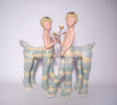

|  | 作品名稱 | 鏡蘊水仙 Narcissus Kissing a Mirrored Self |
| 作者 | 楊宗嘉Yang Zong-jia | |
| 年代 | 2019 | |
| 尺寸 | (45x18x48cm)×2 | |
| 作品說明 | 以雙數鳥、鹿與人馬和花組成的雙生森林，訴說小時候的生命經驗，身為同卵雙胞胎身份，幻想彼岸的另一個他。 雙人馬為此次作品中的主要角色，靈感源自童書的世界帶給孩子們的純粹與如夢似幻，底土使用絞胎色土手捏的形式，捏塑出自然的黃色與綠色的迷幻交融。 頭上的花卉，使用釉上彩裡的粉彩裝飾，創造出花冠的紋飾。 手上拿的玫瑰，是傳統春纏花裡的纏繞技法，加入小孩臉的心蕊，象徵玫瑰的新生花。 |